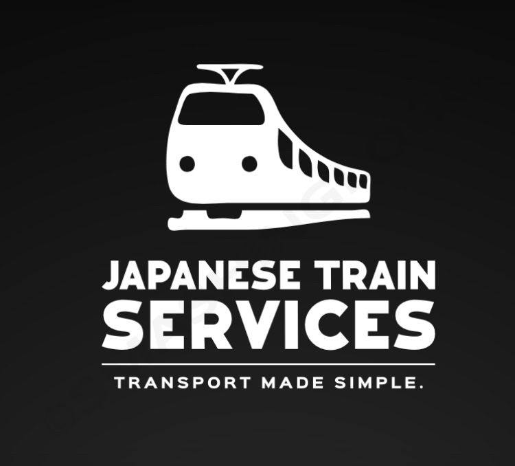

Japanese Train Services

Welcome to Japanese Train Services, a company operating in close collaboration with Marcel Train Services. Our shared goal is to provide efficient and reliable train transportation solutions in Japan. We specialize in offering a wide range of train services, from high-speed rail to commuter lines, with a strong focus on safety and punctuality.
With this collaboration, you can trust us to deliver world-class train transportation services. Whether it’s intercity travel, commuting, or other rail-related needs, we’re dedicated to enhancing the train travel experience while ensuring the utmost safety and quality.